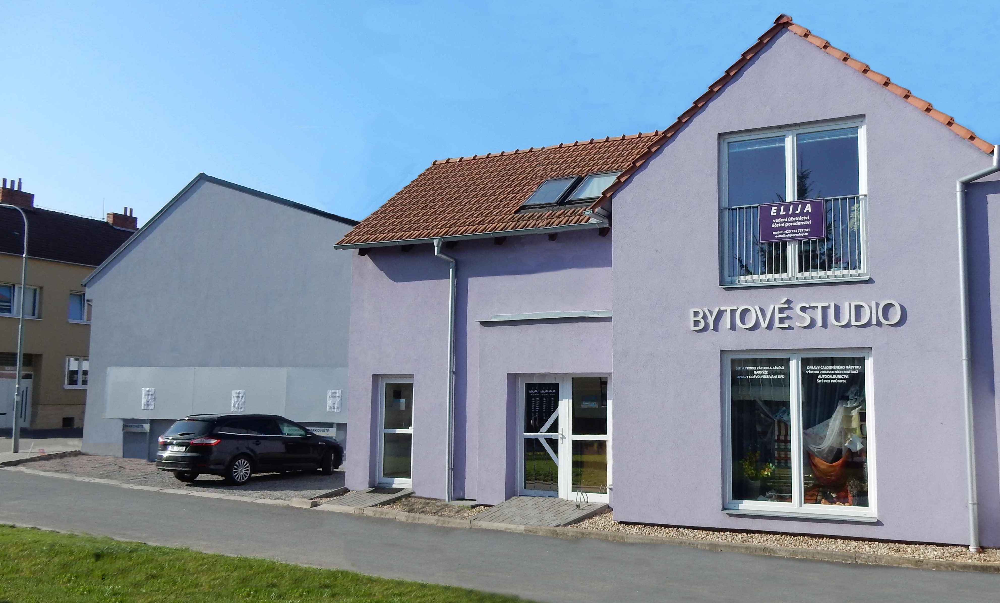
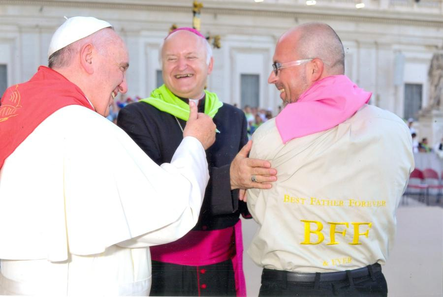
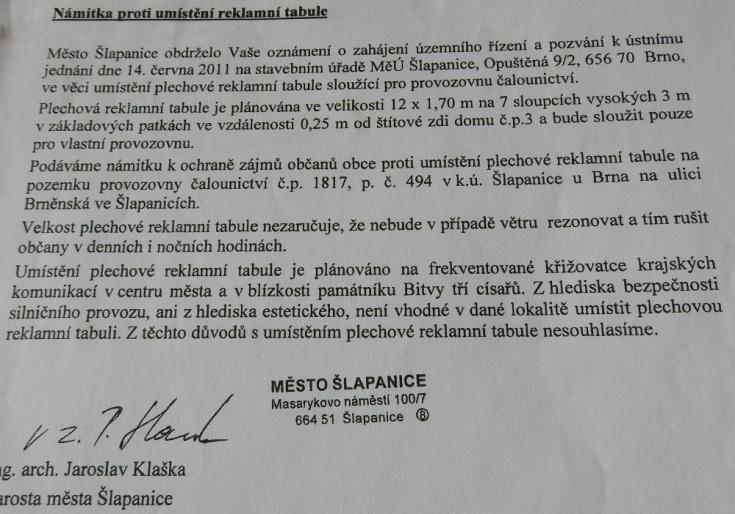
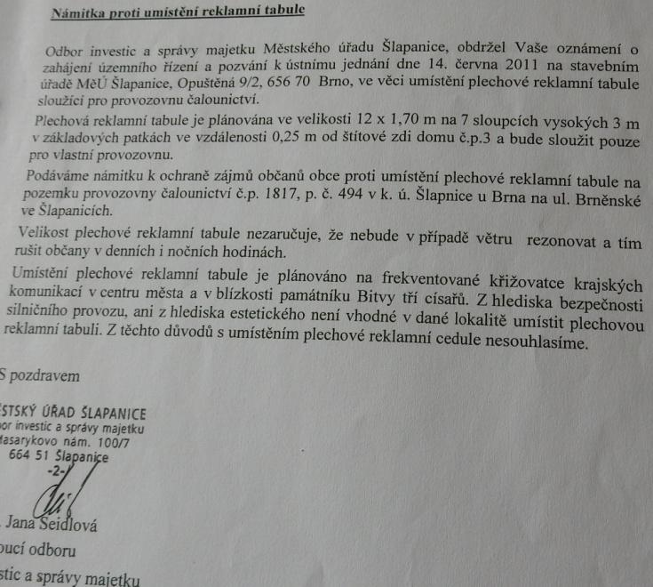
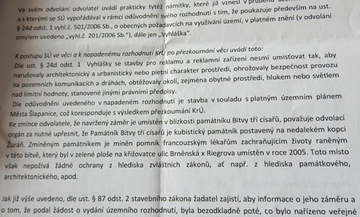
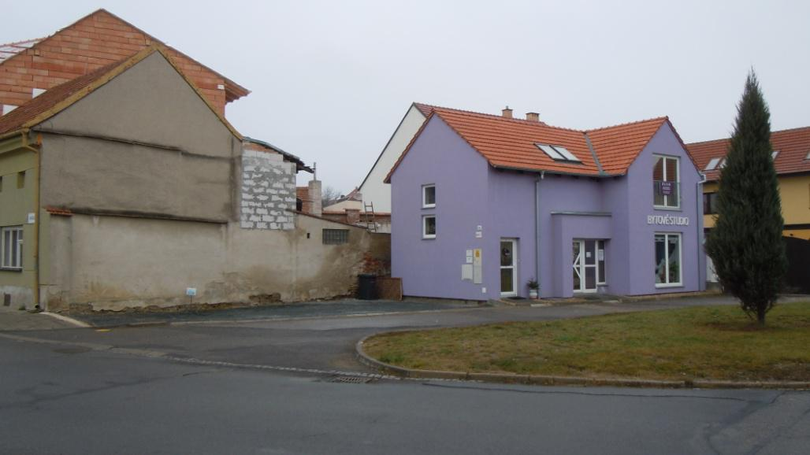
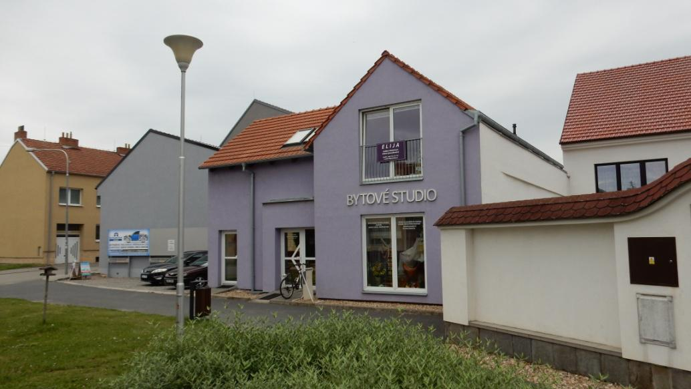

Bytové studio Marie Kolbábková

Založení Firmy
Čalounictví Marie Kolbábková začalo fungovat na povolení MNV 10. května 1988.
Reference
Práce pro Národní divadlo Brno, Nejvyšší soud ČR, Biskupství Brno, Baziliku Porta Coeli Předklášteří - památka UNESCO, Magistrát Města Brna, Konzervatoř Brno, Masarykovu univerzitu, Fakultní nemocnici Brno, Českou spořitelnu, Domov pro seniory Brno Nový Lískovec, Národní Galerii Města Prahy - pro Trojský zámek a Národní knihovnu, LET Kunovice, Porsche Brno, Kajot, Škoda auto Mladá Boleslav, atd. atd.
Výšivka Bytového Studia u Papeže
Papež František hodnotí výšivku z Bytového studia (Itálie/Vatikán/2016).

Realizace Reklamního Panelu
- konzultace se stavebním úřadem
- konzultace s odborem dopravy
- konzultace s dopravním inspektorátem
- žádost o územní souhlas
- požadavek na souhlasy sousedů
- zrušení procesu územního souhlasu
- musí být územní řízení
- 1. námitka vedení Šlapanic
- 2. námitka odboru investic a správy majetku Šlapanic
- vydání územního rozhodnutí, proti tomu 3. odvolání vedení města Šlapanic
- nakonec souhlasné rozhodnutí Krajského úřadu JM kraje
V této souvislosti odesláno asi 100 dopisů a písemností různým institucím, vytištěno kolem 1000 stran papíru. Trvalo to necelé dva roky.



před stavbou panelu

po stavbě panelu
